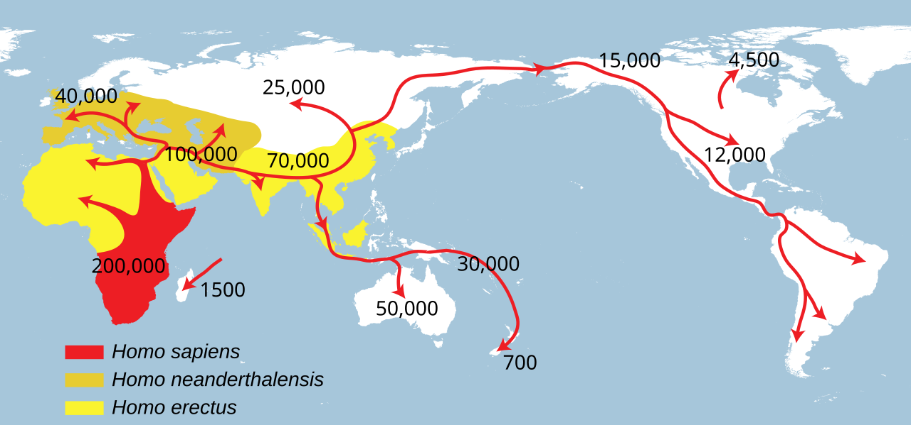
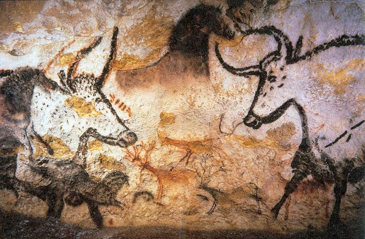
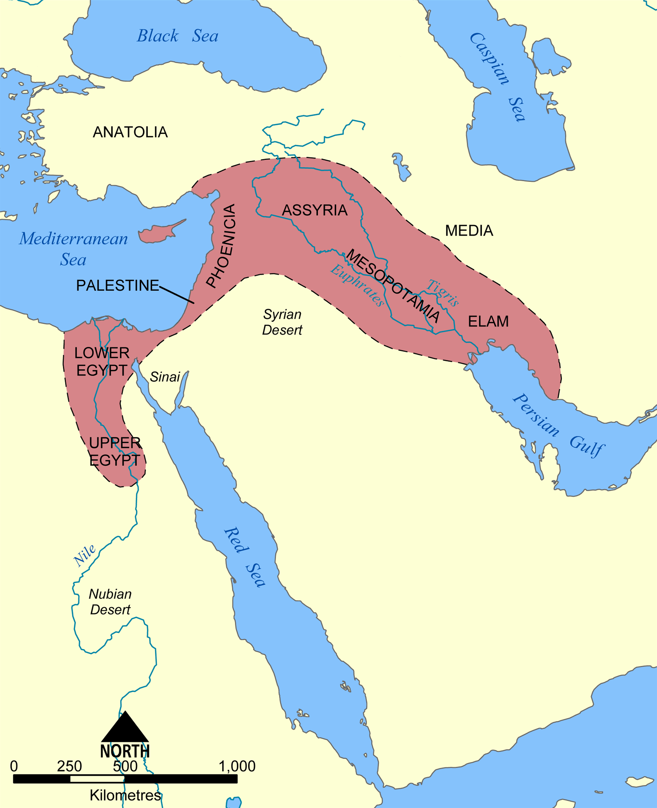
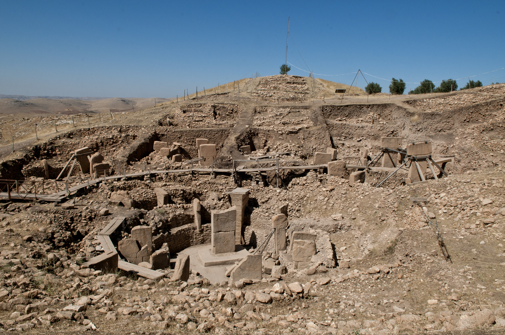
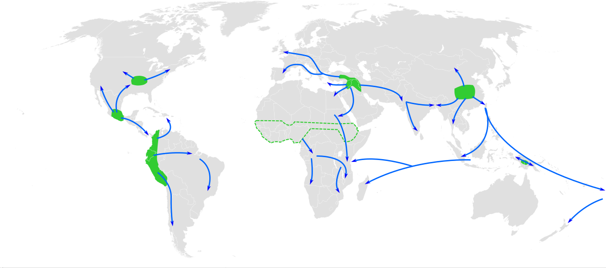
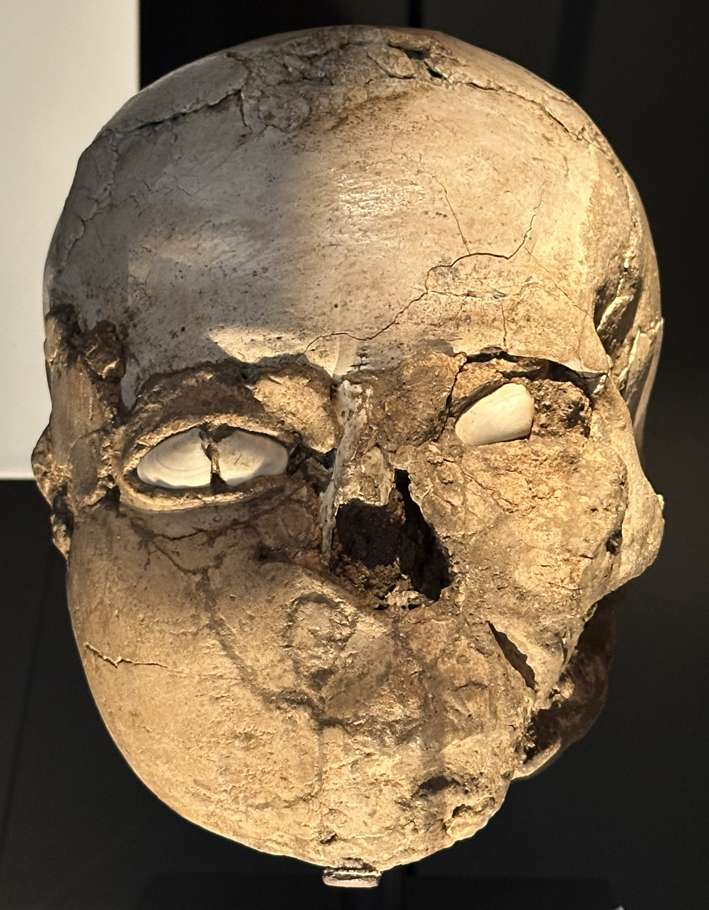
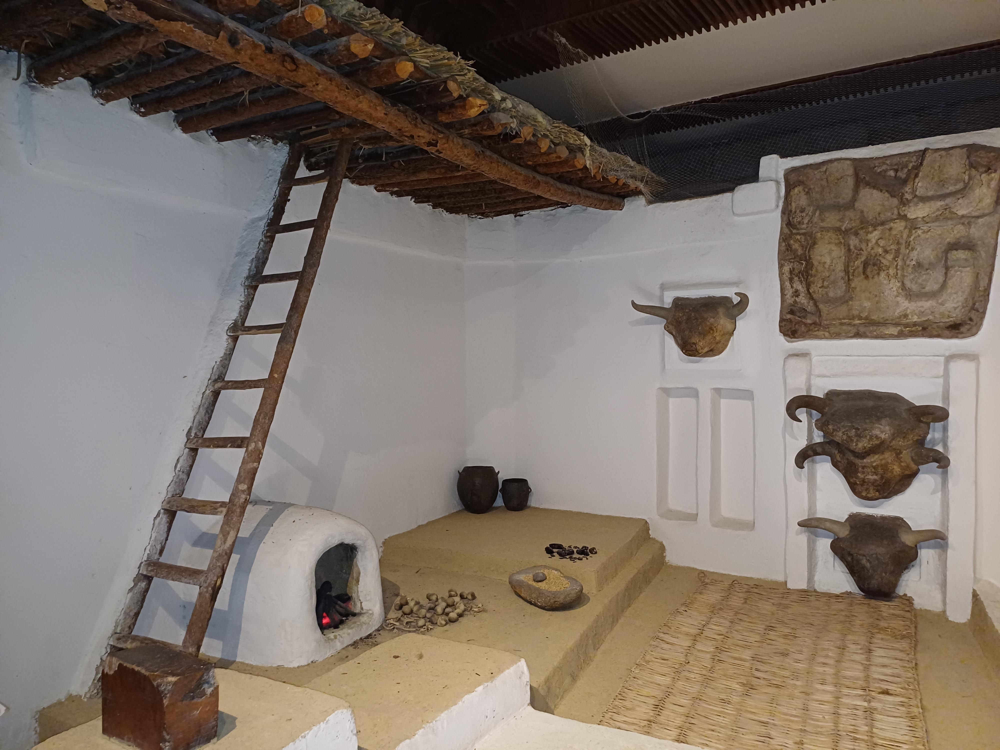

1. Προοίμιο: Το Σπάσιμο της «Ελληνοκεντρικής Φούσκας» και ο Μεγάλος Κόσμος
Ξεκινώντας αυτά τα μαθήματα, οφείλουμε να κάνουμε μια θεμελιώδη παραδοχή που συχνά προκαλεί έκπληξη, αν όχι αμηχανία, στο ελληνικό ακροατήριο: σε αυτόν τον κύκλο διαλέξεων, η ελληνική ιστορία δεν θα είναι ο πρωταγωνιστής.
Όχι βέβαια από απαξίωση —κάθε άλλο. Αλλά γιατί ως Έλληνες, έχουμε την τύχη αλλά και το εκπαιδευτικό προνόμιο να διδασκόμαστε την ιστορία μας από το νηπιαγωγείο ώς το πανεπιστήμιο. Γνωρίζουμε για τον Περικλή, για τον Μέγα Αλέξανδρο, για τις Θερμοπύλες, για το Βυζάντιο, για το 1821. Αυτή η διαρκής ενασχόληση με τον εαυτό μας, ωστόσο, έχει δημιουργήσει μια παράπλευρη παθογένεια: μας έχει εγκλωβίσει σε μια αυστηρά ελληνοκεντρική και ευρωκεντρική οπτική. Θεωρούμε αυτονόητα ότι η κοιτίδα όλων των σημαντικών εξελίξεων βρίσκεται στη δική μας γειτονιά της ανατολικής Μεσογείου.
Στόχος μας, λοιπόν, είναι να παρακολουθήσουμε την περιπέτεια του ανθρώπινου είδους στο σύνολό της: από τις στέπες της Σιβηρίας και τα οροπέδια των Άνδεων, μέχρι τα τροπικά δάση της Ινδονησίας, την κοιλάδα του Κίτρινου Ποταμού και τις ερήμους της Μέσης Ανατολής. Για να το πετύχουμε αυτό, πρέπει να πάμε πίσω —πολύ πίσω— εκεί όπου όλα ξεκίνησαν.
2. Η Απατηλή Κλίμακα του Χρόνου και τα Πρώτα Βήματα: Από τη Λούσι στον Homo erectus
Αν συμπυκνώναμε ολόκληρη την ιστορία του πλανήτη Γη (περίπου 4,5 δισεκατομμύρια χρόνια) σε ένα εικοσιτετράωρο, ο άνθρωπος δεν θα εμφανιζόταν παρά στα τελευταία ελάχιστα δευτερόλεπτα πριν από τα μεσάνυχτα. Κι όμως, μέσα σε αυτό το απειροελάχιστο ριπίδιο του κοσμικού χρόνου, έχουμε την αλαζονική τάση να θεωρούμε τον σύγχρονο, αστικοποιημένο τρόπο ζωής μας ως τον «φυσιολογικό» κανόνα.
Ξεχνούμε πως για το 99% της βιολογικής μας διαδρομής —εκατοντάδες χιλιάδες χρόνια αδιάκοπης περιπλάνησης— το είδος μας δεν ήξερε τι σημαίνει σπίτι, πόλη, χωράφι, ωράριο, ή φορολογία. Υπήρξαμε, πάνω απ' όλα και προπαντός, κυνηγοί και τροφοσυλλέκτες.
Η ανατομική μας προϊστορία ξεκινά με τη διάσημη «Λούσι» —τον σκελετό ενός Australopithecus afarensis που ανακαλύφθηκε το 1974 στο Τρίγωνο του Αφάρ στην Αιθιοπία, ηλικίας 3,2 εκατομμυρίων ετών. Η Λούσι ήταν μόλις 1 μέτρο και 10 εκατοστά στο ανάστημα, με εγκέφαλο στο μέγεθος ενός χιμπαντζή. Κι όμως, είχε κάνει το πρώτο κοσμογονικό βήμα: περπατούσε όρθια στα δύο πόδια!
Όταν ο πρόγονός μας κατέβηκε από τα δέντρα της ανατολικής Αφρικής και σηκώθηκε στα δύο του πόδια, συνέβη κάτι συγκλονιστικό: τα άνω άκρα απελευθερώθηκαν από το βάρος της στήριξης. Τα χέρια έπαψαν να είναι όργανα μετακίνησης και μετατράπηκαν σε όργανα εξερεύνησης, σύλληψης και δημιουργίας. Με τον αντιτακτό αντίχειρα, ο άνθρωπος μπορούσε να κρατήσει μια πέτρα, να τη σμιλέψει, να την εκτοξεύσει με ασύλληπτη ακρίβεια.
Ταυτόχρονα, όμως, η όρθια βάδιση απαίτησε στενότερη λεκάνη, γεγονός που επέβαλε τα ανθρώπινα βρέφη να γεννιούνται «πρόωρα» σε σχέση με τα υπόλοιπα θηλαστικά, εντελώς ανυπεράσπιστα, απαιτώντας για χρόνια τη συλλογική φροντίδα ολόκληρης της ομάδας. Έτσι σφυρηλατήθηκε η κοινωνικότητα και η ανάγκη για αλληλεγγύη.

Εκεί, σε στρώματα ήδη από τη Μεσολιθική εποχή (~10.000–8.000 π.Χ.) —πολύ πριν εμφανιστεί η γεωργία στην Ελλάδα— οι αρχαιολόγοι ανακάλυψαν κοφτερές λεπίδες από οψιδιανό της Μήλου! Τι σημαίνει αυτό; Ότι αυτοί οι «πρωτόγονοι» τροφοσυλλέκτες κατασκεύαζαν πρωτόγονα πλεούμενα και ταξίδευαν στο ανοιχτό Αιγαίο Πέλαγος διανύοντας πάνω από 150 χιλιόμετρα θαλάσσιας διαδρομής για να φέρουν το πολύτιμο ηφαιστειακό γυαλί. Η ναυσιπλοΐα και το εμπόριο είχαν γεννηθεί χιλιάδες χρόνια πριν από τα πρώτα σιτάρια!
«Και μη νομίζετε ότι η εξέλιξη σταμάτησε!» υπενθυμίζει με το χαρακτηριστικό της χιούμορ η Μαρία Ευθυμίου. Αν κάποιος μας κοιτάξει μετά από εκατομμύρια χρόνια, το ανθρώπινο σώμα θα έχει αλλάξει ξανά — ίσως να έχουμε άλλη όψη, κι όμως όποιος θα κοιτάζεται στον καθρέφτη θα θεωρεί τον εαυτό του πανέμορφο, ακριβώς επειδή αυτή θα είναι η γνώριμη μορφή του είδους του!
Η Γη σε Διαρκή Κίνηση & «το Καλοτάξιδο Καράβι της Κρήτης»: Όπως υπενθυμίζει η Μαρία Ευθυμίου, οι ήπειροι δεν είναι στατικές: κάποτε σχημάτιζαν την ενιαία Παγγαία και έκτοτε ταξιδεύουν ασταμάτητα πάνω στις τεκτονικές πλάκες. Η Ινδία συγκρούεται με την Ασία ψηλώνοντας τα Ιμαλάια κατά μερικά χιλιοστά κάθε χρόνο, η Αυστραλία ταξιδεύει προς την Ανταρκτική, ενώ η Κρήτη είναι «ένα καλοτάξιδο καράβι» που μετακινείται σταθερά προς τα νοτιοδυτικά πλησιάζοντας τη Λιβύη! Είμαστε ανασφαλή όντα που αναζητούν σταθερότητα, αλλά ο ίδιος ο πλανήτης βρίσκεται σε αέναο ταξίδι.
Ακολούθησε ο Homo erectus (ο Όρθιος Άνθρωπος), ο οποίος εμφανίστηκε πριν από 1,9 εκατομμύρια χρόνια. Ο Erectus ήταν ο μεγάλος ταξιδευτής: ήταν ο πρώτος που βγήκε από την Αφρική και εξαπλώθηκε στη Γεωργία του Καυκάσου (Dmanisi), στην Κίνα (Άνθρωπος του Πεκίνου) και στην Ινδονησία (Άνθρωπος της Ιάβας). Και ήταν εκείνος που πέτυχε το μεγαλύτερο τεχνολογικό άλμα της προϊστορίας: δάμασε τη φωτιά.
3. Το Θαύμα της Φωτιάς και η Ανατομία της Φωνής: Γιατί Πνιγόμαστε όταν Τρώμε;
Η φωτιά δεν ήταν απλώς θέρμανση και προστασία από τα αρπακτικά τις σκοτεινές νύχτες της σαβάνας. Ήταν, πάνω απ' όλα, ένας εξωτερικός στόμαχος! Με το μαγείρεμα, οι σκληρές ίνες του κρέατος και οι τοξικές ρίζες διασπώνταν προτού εισέλθουν στο σώμα. Το έντερο —ένα ενεργειακά πολυδάπανο όργανο— μπόρεσε να συρρικνωθεί, και όλη αυτή η απελευθερωμένη μεταβολική ενέργεια διοχετεύθηκε στην ανάπτυξη του εγκεφάλου.
Γύρω από τη φωτιά, όμως, γεννήθηκε και ο πολιτισμός. Όταν η μέρα μεγάλωσε τεχνητά κατά τρεις ή τέσσερις ώρες, οι άνθρωποι δεν πήγαιναν για ύπνο μόλις έδυε ο ήλιος. Κάθονταν γύρω από τη φωτιά, κοιτούσαν τις φλόγες, έψηναν, μοιράζονταν την τροφή, και άρχισαν να διηγούνται ιστορίες. Εκεί γεννήθηκε η μυθολογία, η ποίηση και η συλλογική μνήμη.
Χάρη στο γονίδιο FOXP2 και τον χαμηλωμένο λάρυγγα, ο Homo sapiens απέκτησε πριν από περίπου 70.000 χρόνια μια ευέλικτη, συμβολική γλώσσα. Δεν μπορούσε πλέον να μεταδίδει απλώς πληροφορίες για το άμεσο περιβάλλον («προσοχή, ένα λιοντάρι στο ποτάμι!»), αλλά και πληροφορίες για πράγματα που δεν υπάρχουν στον φυσικό κόσμο: πνεύματα, προγόνους, θεούς, κανόνες δικαίου και μύθους. Αυτή η Γνωστική Επανάσταση επέτρεψε σε εκατοντάδες άγνωστους μεταξύ τους ανθρώπους να συνεργάζονται πιστεύοντας στον ίδιο κοινό μύθο —μια ικανότητα μοναδική στο ζωικό βασίλειο.
Η Μεγάλη Γλωσσική Έκρηξη & οι 6.800 Γλώσσες του Κόσμου: Σήμερα στον πλανήτη καταγράφονται περίπου 6.800 ζωντανές γλώσσες. Το πιο συγκλονιστικό στοιχείο, ωστόσο, είναι ότι πάνω από τις μισές ομιλούνται από κοινότητες μικρότερες των 2.500 ανθρώπων, κινδυνεύοντας με άμεση εξαφάνιση. Στη Νέα Γουινέα, ένα μόνο νησί, καταμετρώνται 832 διαφορετικές γλώσσες, ενώ στην Αυστραλία οι αυτόχθονες μιλούσαν 268 διακριτές γλώσσες!
Οι Τέσσερις Γλωσσικοί Οδοστρωτήρες: Η παγκόσμια ιστορία υπήρξε ένα ανελέητο χωνευτήρι γλωσσών μέσα από τέσσερις γιγάντιους μηχανισμούς ομογενοποίησης: την ευρωπαϊκή αποικιοκρατία (αγγλικά, ισπανικά, πορτογαλικά) που σάρωσε τις γλώσσες των ιθαγενών στην Αμερική και την Αυστραλία, τη ρωσική επέκταση στα αχανή δάση και τις στέπες της Σιβηρίας, την αραβική κατάκτηση που επέβαλε την αραβική γλώσσα σε 22 χώρες της Μέσης Ανατολής και της Βόρειας Αφρικής, και τον σινικό δημογραφικό όγκο που κατέστησε τα μανδαρινικά κινεζικά τη μεγαλύτερη ομιλούμενη μητρική γλώσσα στον κόσμο.
Το Συγκριτικό Θαύμα της Ινδοευρωπαϊκής Οικογένειας: Όταν τον 19ο αιώνα οι γλωσσολόγοι άρχισαν να αναλύουν τη σανσκριτική, την αρχαία ιερή γλώσσα των Ινδιών, συνειδητοποίησαν με κομμένη την ανάσα ότι ένα αόρατο νήμα ενώνει τις γλώσσες της Ευρασίας: από το σανσκριτικό mātā στο αρχαίο ελληνικό μήτηρ, το λατινικό mater, το γερμανικό Mutter, το αγγλικό mother και το περσικό mādar, ή από το σανσκριτικό duhitar στο αρχαίο ελληνικό θυγάτηρ, το γερμανικό Tochter και το αγγλικό daughter!
4. Οι Ξεχασμένοι μας Αδελφοί: Νεάντερταλ, Ντενίσοβαν και το Γενετικό μας Ρομάντζο
Σήμερα είμαστε μόνοι μας. Είμαστε το μοναδικό είδος ανθρώπου στον πλανήτη. Όμως για εκατοντάδες χιλιάδες χρόνια, ο πλανήτης Γη φιλοξενούσε ταυτόχρονα πολλά διαφορετικά είδη ανθρώπων, όπως ακριβώς υπάρχουν πολλά διαφορετικά είδη αρκούδων ή αιλουροειδών.
Στην παγωμένη Ευρώπη και τη δυτική Ασία κυριαρχούσε ο Άνθρωπος του Νεάντερταλ (Homo neanderthalensis). Ο Νεάντερταλ ήταν ένα εντυπωσιακό ον: με κοντύτερο αλλά εξαιρετικά μυώδη κορμό, βαριά οστά, πλατιά μύτη για να ζεσταίνει τον παγωμένο αέρα της εποχής των Παγετώνων, και —προσέξτε— μεγαλύτερο εγκέφαλο από τον δικό μας!
Ακόμα πιο συγκινητικό: ανακαλύφθηκε σκελετός ενός ηλικιωμένου Νεάντερταλ που ήταν τυφλός από το ένα μάτι, είχε ακρωτηριασμένο χέρι και βαριά αρθρίτιδα. Δεν μπορούσε να κυνηγήσει ούτε να τραφεί μόνος του. Κι όμως, έζησε μέχρι τα σαράντα του χρόνια! Αυτό αποδεικνύει ότι η ομάδα του τον φρόντιζε, του έφερνε τροφή και τον προστάτευε επί δεκαετίες. Ήταν πλάσματα βαθιάς ενσυναίσθησης.
Και τι συνέβη όταν ο Homo sapiens βγήκε από την Αφρική και συνάντησε τους Νεάντερταλ στη Μέση Ανατολή και την Ευρώπη; Για χρόνια οι επιστήμονες πίστευαν ότι τους εξόντωσε σε έναν προϊστορικό πόλεμο γενοκτονίας. Το 2010, όμως, ο Σουηδός γενετιστής Σβάντε Πάαμπο (Svante Pääbo, βραβευμένος με Νόμπελ Ιατρικής) πέτυχε κάτι που θεωρούνταν αδύνατο: αποκωδικοποίησε το DNA των Νεάντερταλ.
5. Ο «Πρωταρχικός Πλούτος»: Πώς Ζούσε Πραγματικά ο Άνθρωπος των Σπηλαίων
Για αιώνες, η ευρωπαϊκή σκέψη (με προεξάρχοντα τον Τόμας Χομπς) περιέγραφε τη ζωή των προϊστορικών ανθρώπων ως «μοναχική, φτωχή, δυσάρεστη, κτηνώδη και σύντομη». Φανταζόμασταν αξύριστους, καμπουριασμένους πρωτόγονους που έτρεμαν από το κρύο στις σπηλιές, πεινασμένοι και τρομοκρατημένοι από τα άγρια θηρία.
Στη δεκαετία του 1960, ο ανθρωπολόγος Μάρσαλ Σάλινς (Marshall Sahlins) εισήγαγε τον επαναστατικό όρο «η πρωταρχική κοινωνία της αφθονίας» (The Original Affluent Society). Μελετώντας σύγχρονες ομάδες τροφοσυλλεκτών (όπως τους Χατζά στην Τανζανία και τους Σαν στην έρημο Καλαχάρι), οι ερευνητές διαπίστωσαν ότι ένας τροφοσυλλέκτης εργαζόταν μόλις 3 έως 5 ώρες την ημέρα για να εξασφαλίσει όλη την απαραίτητη τροφή!

Ο υπόλοιπος χρόνος ήταν αφιερωμένος στην ανάπαυση, στο παιχνίδι, στις ιστορίες γύρω από τη φωτιά και στη φιλοσοφία. Η διατροφή τους ήταν εκπληκτικά πλούσια: κατανάλωναν εκατοντάδες διαφορετικά είδη φυτών, φρούτων, ξηρών καρπών, ψαριών και άγριων θηραμάτων. Δεν υπέφεραν από έλλειψη βιταμινών, ενώ οι σκελετοί τους αποκαλύπτουν ότι ήταν ψηλότεροι, με γερότερα οστά και σχεδόν παντελή απουσία τερηδόνας, αφού η διατροφή τους δεν περιείχε επεξεργασμένα σάκχαρα και κολλώδεις αμυλούχες τροφές.
Στο κοινωνικό πεδίο, οι παλαιολιθικές ομάδες (15 έως 20 άτομα) ήταν εντυπωσιακά εξισωτικές. Δεν υπήρχαν βασιλιάδες, δεν υπήρχε κληρονομική εξουσία, και πάνω απ' όλα, δεν υπήρχε ατομική ιδιοκτησία (κουβαλούσαν μόνο ό,τι χώραγε στα χέρια τους). Η ανάλυση των οστών παλαιολιθικών γυναικών δείχνει έντονη έλλειψη ασβεστίου, αποδεικνύοντας ότι θήλαζαν τα μωρά τους για 4–5 χρόνια. Αυτός ο παρατεταμένος θηλασμός λειτουργούσε ως φυσική αντισύλληψη, αποτρέποντας τις συχνές γέννες και διατηρώντας τις νομαδικές ομάδες μικρές, ώστε να μην εξαντλούνται οι φυσικοί πόροι της περιοχής.
Ο Άθλος των Δηλητηρίων: Πώς Ανακαλύψαμε τι Τρώγεται και τι Σκοτώνει
Έχετε σκεφτεί ποτέ ποιο ήταν το πραγματικό τίμημα για να μάθει το ανθρώπινο είδος τι τρώγεται στη φύση; Στη γη υπάρχουν εκατομμύρια φυτικά είδη, αλλά σήμερα καταναλώνουμε μόλις λίγες χιλιάδες. Όπως παρατηρεί η Μαρία Ευθυμίου, πίσω από αυτή τη γνώση κρύβεται ένα ανείπωτο προϊστορικό έπος δοκιμών: κάποιος πρόγονος δοκίμασε έναν άγνωστο καρπό και τρελάθηκε, άλλος έφαγε μια ρίζα και τυφλώθηκε, άλλος έφαγε ένα μανιτάρι κι έπεσε νεκρός επί τόπου! Χιλιάδες ανώνυμοι άνθρωποι θυσιάστηκαν με φριχτούς πόνους για να μάθουμε τι τρέφει και τι σκοτώνει.
Άλλοι παρατήρησαν τι έτρωγαν τα πουλιά και τα θηλαστικά, ανακάλυψαν εμπειρικά ότι ορισμένες τοξικές ρίζες (όπως η μανιόκα ή τα άγρια βελανίδια) γίνονται βρώσιμες μόνο αν βραστούν πολλές φορές ή μουλιάσουν στο νερό για να φύγουν οι δηλητηριώδεις τανίνες, και κωδικοποίησαν αυτή τη γνώση σε προφορικές παραδόσεις. Όλη η σύγχρονη βοτανολογία, η τοξικολογία και η φαρμακολογία στηρίζονται σε αυτόν τον προϊστορικό, επώδυνο άθλο των τροφοσυλλεκτών.
Η Ψυχολογία του Κυνηγού: Προσανατολισμός, Στρατηγική και... Ποδόσφαιρο
Το κυνήγι δεν ήταν ποτέ ένα άναρχο τρέξιμο πίσω από τα ζώα («δεν έτρεχαν σαν τους αλαμάντα!»). Απαιτούσε αυστηρό ομαδικό συντονισμό, παγίδες και στρατηγική ενέδρας. Κυνηγώντας το θήραμα, οι άνδρες απομακρύνονταν δεκάδες χιλιόμετρα από τη βάση τους —σαν να ξεκινάς από το Σύνταγμα και να βρίσκεσαι μέσα στα πυκνά δάση της Πάρνηθας χωρίς GPS και χωρίς καμία πινακίδα («κι ακόμα και οι ελληνικές πινακίδες που δείχνουν όπου να 'ναι είναι μια παρηγοριά της ψυχής!»).
Έτσι ο ανδρικός εγκέφαλος διαμόρφωσε αταβιστικά βαθιά αίσθηση κατεύθυνσης, αγάπη για το ρίσκο και πάθος για τη στρατηγική. Όπως αστειεύεται η Μαρία Ευθυμίου απευθυνόμενη στις γυναίκες του ακροατηρίου: γι' αυτό οι άνδρες λατρεύουν το σκάκι και όταν βλέπουν ποδόσφαιρο δεν χαζεύουν απλώς την μπάλα, αλλά φωνάζουν στην οθόνη υποδεικνύοντας στον προπονητή τις αλλαγές και τη στρατηγική των παικτών!
Ο Σκύλος: Ο Μοναδικός Σύντροφος της Παλαιολιθικής Εποχής
Μέσα σε αυτή την παλαιολιθική περιπλάνηση συντελέστηκε και η μοναδική εξημέρωση ζώου που προηγήθηκε της γεωργίας κατά δεκάδες χιλιάδες χρόνια: η εξημέρωση του λύκου και η γέννηση του σκύλου (~30.000–15.000 π.Χ.).
Δεν επρόκειτο για σχέση αφέντη και υποτακτικού, αλλά για μια αληθινή συμμαχία δύο κορυφαίων θηρευτών. Ο λύκος διέθετε ασύγκριτη όσφρηση, ακοή και ταχύτητα. Ο άνθρωπος διέθετε εργαλεία, φωτιά και μακρινή ρίψη δοράτων. Μαζί έγιναν ανίκητοι στο κυνήγι. Τις νύχτες, οι σκύλοι λειτουργούσαν ως συναγερμός απέναντι στα αρπακτικά, και στις παγωμένες νύχτες του χειμώνα κοιμούνταν αγκαλιά με τους ανθρώπους ζεσταίνοντάς τους (οι Αβορίγινες της Αυστραλίας χρησιμοποιούν μέχρι σήμερα τη φράση «νύχτα τριών σκύλων» για να περιγράψουν μια νύχτα με αφόρητο κρύο!).
6. Το Πρώτο «Ανθρωπόκαινο»: Ο Άνθρωπος ως Οικολογικός Οδοστρωτήρας
Υπάρχει ένας βαθιά ριζωμένος ρομαντικός μύθος στη σύγχρονη οικολογία: ότι ο προϊστορικός άνθρωπος ζούσε σε απόλυτη, αγγελική αρμονία με τη φύση, και ότι η οικολογική καταστροφή ξεκίνησε μόλις τον 18ο αιώνα με τα εργοστάσια της Βιομηχανικής Επανάστασης. Η ιστορική και παλαιοντολογική πραγματικότητα είναι συγκλονιστικά διαφορετική.
Όπου πάτησε το πόδι του ο Homo sapiens, συντελέστηκε μια οικολογική καταστροφή βιβλικών διαστάσεων. Το είδος μας υπήρξε ο απόλυτος θηρευτής-εξολοθρευτής της παγκόσμιας μεγαπανίδας.
Η Αυστραλία, οι Αβορίγινες & «το Κοκαλάκι της Νυχτερίδας»: Όπως περιγράφει με αυθόρμητο χιούμορ η Μαρία Ευθυμίου από την προσωπική της επίσκεψη (ο γιος της έζησε εκεί 7-8 χρόνια), η Αυστραλία είναι η πιο άνυδρη ήπειρος της γης —«μια κατάκοκκινη κόλαση της ερήμου με τις πιο δηλητηριώδεις αράχνες, σκορπιούς και φίδια στον κόσμο!». Περίπου 300.000 Αβορίγινες σε 500 φυλές ζούσαν επί 50.000 χρόνια αποκλειστικά ως κυνηγοί-τροφοσυλλέκτες. Τον 17ο αιώνα έφτασαν πρώτοι οι Ολλανδοί στην άγονη δυτική ακτή και την εγκατέλειψαν. Μετά από 150 χρόνια έφτασε ο Βρετανός Κουκ στην καταπράσινη ανατολική πλευρά —«η Αγγλία είχε το κοκαλάκι της νυχτερίδας για 200 χρόνια!»— μετατρέποντάς την σε αποικία καταδίκων («προέκταση της μαμάς Αγγλίας»). Η σύγκρουση μιας παλαιολιθικής κοινωνίας τροφοσυλλεκτών με τη βιομηχανική Βρετανία του 18ου αιώνα ήταν τραγικά άνιση: «ο Αβορίγινας ήταν χαμένος από χέρι!».
7. Το Μεγάλο Στοίχημα: Η Νατούφια Περίοδος και η Δημογραφική Παγίδα
Πριν από περίπου 14.000 με 12.000 χρόνια, οι μεγάλοι παγετώνες άρχισαν να λιώνουν. Η Γη εισήλθε σε μια θερμότερη και σταθερότερη κλιματική φάση: την εποχή του Ολοκαίνου (Holocene).
Στη νοτιοδυτική Ασία, στην περιοχή που ονομάζουμε Εύφορη Ημισέληνο —ένα τόξο που εκτείνεται από το Ισραήλ, τον Λίβανο και τη Συρία, ανηφορίζει στη νοτιοανατολική Τουρκία και κατηφορίζει μέσω του Τίγρη και του Ευφράτη προς το Ιράκ— το νέο υγρό κλίμα δημιούργησε ένα φυσικό θαύμα: απέραντα φυσικά λιβάδια από άγριο δίκοκκο σιτάρι (emmer), μονόκοκκο σιτάρι (einkorn) και άγριο κριθάρι.

Εδώ συνέβη το μεγάλο ιστορικό παράδοξο: ο άνθρωπος εγκαταστάθηκε μόνιμα σε οικισμούς ΠΡΙΝ ανακαλύψει τη γεωργία!
Ο πολιτισμός που έκανε αυτό το πρώτο βήμα ήταν οι Νατούφιοι (Natufian culture) στην περιοχή της Παλαιστίνης και της Συρίας (~12.500–9.500 π.Χ.). Οι εκτάσεις των άγριων σιτηρών ήταν τόσο πλούσιες, ώστε οι άνθρωποι δεν χρειαζόταν πια να μετακινούνται. Έχτισαν μόνιμες κυκλικές πέτρινες καλύβες, βαριά γουδιά από βασάλτη για το άλεσμα των σπόρων και επινόησαν δρεπάνια με λεπίδες πυριτόλιθου σφηνωμένες σε λαβές από κόκαλο.
Όμως αυτή η εγκατάσταση έκρυβε μια μοιραία δημογραφική παγίδα. Όσο μια ομάδα ήταν νομαδική, μια μητέρα μπορούσε να μεγαλώνει μόνο ένα μικρό παιδί τη φορά, γιατί έπρεπε να το κουβαλά στην αγκαλιά στις ατελείωτες πεζοπορίες. Οι γεννήσεις απείχαν υποχρεωτικά 3 έως 4 χρόνια. Στα μόνιμα πέτρινα σπίτια των Νατούφιων, ο περιορισμός αυτός εξαφανίστηκε: οι γυναίκες μπορούσαν να γεννούν κάθε 1 με 2 χρόνια, ταΐζοντας τα μωρά με μαλακό χυλό σιτηρών.
Ο πληθυσμός διπλασιάστηκε και τριπλασιάστηκε ραγδαία. Όταν όμως ο πληθυσμός εκτοξεύτηκε, τα άγρια λιβάδια δεν επαρκούσαν πλέον. Δεν υπήρχε πια δρόμος επιστροφής στο κυνήγι: ο άνθρωπος είχε παγιδευτεί. Έπρεπε είτε να πεθάνει από μαζική πείνα, είτε να αρχίσει να καλλιεργεί ο ίδιος τη γη.
8. Η «Αποκοτιά» της Γεωργικής Επανάστασης: Ποιος Εξημέρωσε Ποιον;
Η λέξη που χρησιμοποιεί η καθηγήτρια Μαρία Ευθυμίου για τη μετάβαση στη γεωργία είναι εξόχως εύστοχη: ήταν μια «αποκοτιά». Ένα παράτολμο, ριψοκίνδυνο, κολοσσιαίο στοίχημα. Γιατί τι σήμαινε να γίνεις γεωργός; Σήμαινε να πάρεις σπόρους που θα μπορούσες να φας σήμερα, να τους θάψεις στο χώμα και να προσεύχεσαι επί μήνες να βρέξει, να μην πέσει χαλάζι, να μην τους φάνε οι ακρίδες, να μην σαπίσουν από την υγρασία!
Και κάπου εκεί, γύρω στο 9.500 π.Χ., γεννήθηκε η συστηματική γεωργία. Ο άνθρωπος παρατήρησε ότι αν διάλεγε σπόρους από στάχυα που δεν σκορπούσαν εύκολα στον άνεμο, η επόμενη σοδειά ήταν ευκολότερη. Χωρίς να ξέρει γενετική, εφάρμοσε τεχνητή επιλογή, μετατρέποντας το άγριο σιτάρι σε εξημερωμένο φυτό.

Και τότε ήρθε η ανακάλυψη του Γκεμπεκλί Τεπέ (Göbekli Tepe) στη νοτιοανατολική Τουρκία να τινάξει στον αέρα όλες τις βεβαιότητες των ιστορικών! Μέχρι πρόσφατα θεωρούσαμε ότι πρώτα ανακαλύφθηκε η γεωργία, μετά αποκτήθηκε πλεόνασμα τροφής, και έπειτα χτίστηκαν ναοί. Το Γκεμπεκλί Τεπέ απέδειξε το αντίθετο: κυνηγοί-τροφοσυλλέκτες συγκεντρώθηκαν για θρησκευτικούς λόγους, λάξευσαν γιγάντιους μονολίθους 20 τόνων σε σχήμα Τ με ανάγλυφα άγρια ζώα, και για να θρέψουν τους οικοδόμους του ιερού, άρχισαν να σπέρνουν εντατικά το άγριο σιτάρι στις γύρω πλαγιές. Η θρησκεία γέννησε τη γεωργία, όχι η γεωργία τη θρησκεία!
Η Μεταφυσική Μετατόπιση: Από τον Ανιμισμό στους Θεούς της Γονιμότητας
Η Γεωργική Επανάσταση δεν άλλαξε μόνο το στομάχι του ανθρώπου· άλλαξε εκ θεμελίων τη θρησκευτική του συνείδηση.
Ο κυνηγός-τροφοσυλλέκτης ζούσε σε έναν κόσμο Ανιμισμού (Animism). Πίστευε ότι κάθε ζώο, δέντρο, πηγή και βουνό είχε ψυχή και πνεύμα. Ο άνθρωπος δεν θεωρούσε τον εαυτό του ανώτερο από τη φύση, αλλά ισότιμο κομμάτι της. Όταν ένας κυνηγός σκότωνε ένα ελάφι, ζητούσε συγγνώμη από το πνεύμα του ζώου, εξηγώντας ότι το έκανε από ανάγκη για να θρέψει τα παιδιά του.
Με τη γεωργία, ο άνθρωπος υποδούλωσε τη φύση. Έκλεισε τα ζώα σε μαντριά, ξερίζωσε τα δάση για να σπείρει χωράφια, και έχτισε αποθήκες. Ο ανιμισμός πέθανε. Στη θέση του γεννήθηκαν οι Θεοί της Γονιμότητας, του Ήλιου και της Βροχής, και η κυρίαρχη λατρεία της Μεγάλης Μητέρας Γης. Ο άνθρωπος δεν συνομιλούσε πλέον με τα ζώα· πρόσφερε θυσίες σε ισχυρές θεότητες για να εξασφαλίσει μια καλή σοδειά.
9. Η Παγκόσμια Σκακιέρα: Τα Άλλα Κέντρα της Γης και ο Προσανατολισμός των Ηπείρων
Η Εύφορη Ημισέληνος υπήρξε το αρχαιότερο και πιο επιδραστικό λίκνο της γεωργίας, αλλά δεν ήταν το μοναδικό. Σε διαφορετικές γωνιές του πλανήτη, ομάδες ανθρώπων που δεν είχαν καμία επαφή μεταξύ τους, ανακάλυψαν εντελώς ανεξάρτητα τη γεωργία:

- Στην Κίνα (~7.500 π.Χ.): Κατά μήκος του ποταμού Γιανγκτσέ εξημερώθηκε το ρύζι, ενώ βορειότερα, στον Κίτρινο Ποταμό, καλλιεργήθηκε το κεχρί και εξημερώθηκε ο χοίρος.
- Στη Μεσοαμερική (Μεξικό, ~4.000 π.Χ.): Μέσα από χιλιετίες επίπονης τεχνητής επιλογής, οι ιθαγενείς μετέτρεψαν ένα μικροσκοπικό αγριόχορτο, το τεοσίντε, στο γιγάντιο και υπερ-θρεπτικό καλαμπόκι (maize). Το συνδύασαν με τα φασόλια και τις κολοκύθες —η περίφημη διατροφική τριάδα των «Τριών Αδελφών».
- Στις Άνδεις της Νοτίου Αμερικής: Στα παγωμένα οροπέδια σε υψόμετρο 3.500 μέτρων καλλιεργήθηκε η πατάτα (σε εκατοντάδες διαφορετικές ποικιλίες) και η κινόα.
- Στα Υψίπεδα της Νέας Γουινέας: Εξημερώθηκε η μπανάνα, το ζαχαροκάλαμο και το τάρο.
Ο Άξονας Ανατολής-Δύσης έναντι Βορρά-Νότου (Jared Diamond)
Και εδώ αναδύεται η εκπληκτική γεωγραφική θεωρία του Jared Diamond, την οποία τονίζει με ιδιαίτερη έμφαση η Μαρία Ευθυμίου: Γιατί η Ευρασία κατέκτησε τεχνολογικά τον κόσμο και όχι η Αμερική ή η Αφρική;
Η απάντηση βρίσκεται στον γεωμετρικό προσανατολισμό των ηπείρων! Η Ευρασία απλώνεται κατά μήκος του άξονα Ανατολής-Δύσης. Αυτό σημαίνει ότι από την Ισπανία και την Ελλάδα μέχρι την Περσία, τη βόρεια Ινδία και την Κίνα, το γεωγραφικό πλάτος είναι περίπου το ίδιο! Οι περιοχές αυτές μοιράζονται την ίδια διάρκεια ημέρας, παρόμοιες εποχές και παρόμοιο κλίμα. Συνεπώς, ένα σπυρί σιτάρι ή ένα πρόβατο που εξημερώθηκε στην Εύφορη Ημισέληνο μπορούσε να ταξιδέψει και να ευδοκιμήσει με εξαιρετική ταχύτητα τόσο δυτικά προς την Ευρώπη όσο και ανατολικά προς την Ασία!
Αντίθετα, η Αμερική και η Αφρική απλώνονται κατά μήκος του άξονα Βορρά-Νότου. Για να ταξιδέψει ένα φυτό από το Μεξικό στον Καναδά ή από τις Άνδεις στη Βόρεια Αμερική, έπρεπε να διασχίσει ριζικά διαφορετικές κλιματικές ζώνες: τροπικές ζούγκλες, αχανείς ερήμους, αλλαγή διάρκειας ημέρας. Η πατάτα των Άνδεων δεν μπορούσε να διασχίσει τη ζούγκλα του Παναμά για να φτάσει στους Μάγια, και το καλαμπόκι χρειάστηκε χιλιάδες χρόνια για να προσαρμοστεί στους παγετούς της βόρειας Αμερικής. Η γεωγραφική απομόνωση καθυστέρησε δραματικά την ανταλλαγή γνώσεων και τεχνολογίας.
10. Η «Αρχή της Άννας Καρένινα» στην Εξημέρωση των Ζώων
Παράλληλα με τα φυτά, συντελέστηκε η εξημέρωση των ζώων. Εδώ όμως η ιστορία κρύβει ένα συναρπαστικό βιολογικό μυστήριο: Γιατί σε ολόκληρο τον πλανήτη, από τα χιλιάδες είδη μεγάλων θηλαστικών, ο άνθρωπος κατάφερε να εξημερώσει ουσιαστικά μόνο πέντε βασικά παραγωγικά ζώα (πρόβατο, κατσίκα, χοίρος, βόδι και άλογο);
Η «Αρχή της Άννας Καρένινα» εξηγεί ότι για να εξημερωθεί ένα άγριο ζώο πρέπει να πληροί και τα έξι απαράβατα κριτήρια ταυτόχρονα. Αν αποτύχει έστω και σε ένα, η εξημέρωση είναι αδύνατη:
- Ευέλικτη διατροφή: Πρέπει να τρώει φυτά που δεν ανταγωνίζονται τη διατροφή του ανθρώπου (χορτάρι). Τα σαρκοφάγα αποκλείονται —φανταστείτε να έπρεπε να εκτρέφετε κοπάδια για να ταΐσετε ένα κοπάδι λιοντάρια!
- Ταχύς ρυθμός ανάπτυξης: Πρέπει να ενηλικιώνεται σε ένα με δύο χρόνια (όχι όπως ο ελέφαντας που χρειάζεται δεκαπέντε χρόνια).
- Αναπαραγωγή σε αιχμαλωσία: Πολλά άγρια ζώα (όπως το τσιτάχ) αρνούνται να ζευγαρώσουν αν δεν έχουν ελεύθερο χώρο για παρατεταμένα ερωτικά κυνηγητά.
- Ήρεμος χαρακτήρας: Η αρκούδα, ο βίσονας και ο ιπποπόταμος σκοτώνουν ανθρώπους χωρίς δεύτερη σκέψη.
- Ψυχραιμία στον πανικό: Οι γαζέλες και τα ελάφια, όταν κλειστούν σε μαντρί, τρελαίνονται από πανικό και σπάνε τον λαιμό τους πέφτοντας με ταχύτητα στους φράχτες. Αντίθετα, τα πρόβατα συσπειρώνονται σε κοπάδι.
- Ιεραρχική κοινωνική δομή: Το ζώο πρέπει να είναι μαθημένο να ακολουθεί έναν ηγέτη της αγέλης. Όταν εξημερώνεις ένα πρόβατο ή ένα άλογο, ο άνθρωπος παίρνει απλώς τη θέση του κυρίαρχου αρχηγού στο μυαλό του ζώου!
11. Οι Πρώτες Πειραματικές Πόλεις: Ιεριχώ και Τσατάλχογιούκ
Με την εδραίωση της γεωργίας και της κτηνοτροφίας, οι απλοί αγροτικοί οικισμοί άρχισαν να γιγαντώνονται. Γύρω στο 8.000 με 7.000 π.Χ., εμφανίζονται οι πρώτες πειραματικές «πρωτο-πόλεις» της ανθρωπότητας.

Η Ιεριχώ στην κοιλάδα του Ιορδάνη είναι ο αρχαιότερος συνεχώς κατοικημένος οικισμός στον κόσμο. Ήδη από το 8.000 π.Χ., η Ιεριχώ είχε έναν πληθυσμό 2.000 έως 3.000 κατοίκων. Το πιο συγκλονιστικό: περιβαλλόταν από ένα πανίσχυρο πέτρινο τείχος πάχους σχεδόν δύο μέτρων και έναν μνημειώδη πέτρινο πύργο ύψους 8,5 μέτρων με εσωτερική σκάλα! Γιατί χτίστηκε αυτό το τείχος; Για να προστατεύσει τις αποθήκες σιτηρών και την πολύτιμη πηγή γλυκού νερού από τους επιδρομείς της ερήμου.

Λίγο βορειότερα, στο οроπέδιο του Ικονίου στην κεντρική Τουρκία, αποκαλύφθηκε το εκπληκτικό Τσατάλχογιούκ (Çatalhöyük, ~7.500–5.700 π.Χ.). Το Τσατάλχογιούκ στέγαζε σχεδόν 10.000 ανθρώπους σε μια αρχιτεκτονική διάταξη που δεν μοιάζει με τίποτα από όσα ξέρουμε σήμερα: δεν υπήρχαν καθόλου δρόμοι!
Τα σπίτια από πλιθιά ήταν χτισμένα κολλητά το ένα δίπλα στο άλλο, σαν κελιά κυψέλης. Οι άνθρωποι περπατούσαν πάνω στις επίπεδες ταράτσες, όπου εκτυλισσόταν όλη η κοινωνική ζωή: εκεί μαγείρευαν, εκεί ύφαιναν, εκεί συνομιλούσαν. Κάθε σπίτι είχε μια τρύπα στην οροφή από όπου έμπαινε το φως, έβγαινε ο καπνός της εστίας, και κατέβαινε μια ξύλινη σκάλα προς το εσωτερικό του σπιτιού. Αν πλησίαζε εχθρός, οι κάτοικοι απλώς τραβούσαν τις σκάλες στην ταράτσα και ο οικισμός μετατρεπόταν σε ένα απόρθητο φρούριο!
Στο εσωτερικό των σπιτιών, οι τοίχοι ήταν επιχρισμένοι με λευκό ασβέστη και διακοσμημένοι με τοιχογραφίες από τεράστιους ταύρους, ελάφια, και γύπες χωρίς κεφάλια. Κάτω από τα υπερυψωμένα πλίθινα κρεβάτια, οι οικογένειες έθαβαν τους νεκρούς προγόνους τους, ζώντας κυριολεκτικά πάνω από τα οστά των αγαπημένων τους προσώπων.
12. Το Βαρύ Τίμημα: Ιδιοκτησία, Αποθήκες, Ανισότητα, Πατριαρχία και Ζωονόσοι
Η Γεωργική Επανάσταση συχνά εξυμνείται ως ο απόλυτος θρίαμβος της ανθρώπινης εφευρετικότητας. Ήταν πράγματι ένας θρίαμβος, αλλά είχε ένα σκοτεινό, οδυνηρό αντίτιμο που διαμόρφωσε τις παθογένειες της ανθρωπότητας μέχρι σήμερα.
Α. Η Γέννηση της Ιδιοκτησίας και των Στρατών
Όταν σπέρνεις ένα χωράφι, είσαι δεμένος με τη γη. Κι όταν θερίσεις, μαζεύεις τόνους σιτηρών που πρέπει να αποθηκευτούν. Έτσι γεννιέται η αποθήκη —και μαζί της, η έννοια της ατομικής ιδιοκτησίας. Όμως μια γεμάτη αποθήκη είναι ένας ακαταμάχητος πειρασμός για τους γείτονες. Για πρώτη φορά στην ιστορία, οι άνθρωποι αναγκάζονται να οργανώσουν μόνιμες ένοπλες φρουρές. Ο πόλεμος παύει να είναι περιστασιακή αψιμαχία μεταξύ κυνηγών και μετατρέπεται σε οργανωμένη, αιματηρή επιχείρηση αρπαγής γης, σοδειάς και δούλων.
Β. Κοινωνική Ανισότητα και Δουλεία
Στην κοινωνία των κυνηγών όλοι ήταν περίπου ίσοι. Στη γεωργική κοινωνία, όποιος ελέγχει την αποθήκη και τη διανομή του σιταριού, ελέγχει τη ζωή όλων των υπολοίπων. Γεννιέται η πυραμίδα της εξουσίας: στην κορυφή οι βασιλιάδες-πολέμαρχοι και οι ιερείς, πιο κάτω οι στρατιώτες και οι γραφείς, στη βάση η μάζα των αγροτών που μοχθεί ασταμάτητα, και στον πάτο οι δούλοι —αιχμάλωτοι πολέμου που μετατρέπονται σε ζωντανά εργαλεία στα χωράφια.
Γ. Οι Επιδημίες των Ζωονόσων
Η στενή συμβίωση χιλιάδων ανθρώπων με οικόσιτα ζώα σε περιβάλλοντα γεμάτα περιττώματα και στάσιμα νερά υπήρξε υγειονομική καταστροφή. Σχεδόν όλες οι φονικές επιδημίες που θέρισαν ιστορικά την ανθρωπότητα γεννήθηκαν ακριβώς τότε, ως ζωονόσοι:
- Η ευλογιά πέρασε στον άνθρωπο από τα βοοειδή.
- Η ιλαρά προήλθε από τον σκύλο και τα βοοειδή.
- Η γρίπη γεννήθηκε από τη συμβίωση χοίρων και πτηνών (πάπιες).
- Η φυματίωση μεταδόθηκε από τα βοοειδή μέσω του μολυσμένου γάλακτος.
- Η ελονοσία εκτοξεύτηκε στα στάσιμα νερά των αρδευτικών καναλιών.
Δ. Η Ανατροπή της Θέσης της Γυναίκας και η Γέννηση της Πατριαρχίας
Στην εποχή της τροφοσυλλογής, η γυναίκα έχαιρε βαθύτατου σεβασμού: έφερνε το 80% των θερμίδων της ομάδας, γνώριζε όλα τα θεραπευτικά βότανα και περπατούσε ελεύθερη. Με τη γεωργία, η θέση της κατέρρευσε.
Πρώτον, το βαρύ άροτρο με τα βόδια απαιτούσε την εκρηκτική μυϊκή δύναμη του άνδρα, περιθωριοποιώντας τη γυναίκα από την πρωτογενή παραγωγή. Δεύτερον, η ιδιοκτησία της γης απαίτησε αυστηρούς κανόνες κληρονομιάς: ο πατέρας έπρεπε να είναι απολύτως βέβαιος για τη βιολογική πατρότητα του γιου του ώστε να του κληροδοτήσει το χωράφι. Έτσι γεννήθηκε η αυστηρή περιχαράκωση της γυναίκας στο σπίτι, ο έλεγχος της σεξουαλικότητάς της και η πατριαρχία.
Σε πολλές αρχέγονες κοινωνίες, η καταγωγή και τα δικαιώματα περνούσαν πράγματι μέσα από τη γραμμή της μητέρας (γιατί η μητρότητα είναι πάντοτε βέβαιη, ενώ η πατρότητα ήταν αβέβαιη). Αυτό όμως δεν σημαίνει ότι οι γυναίκες ασκούσαν την πολιτική και στρατιωτική εξουσία! Ακόμα και στις μητρογραμμικές κοινωνίες, η πολιτική ηγεσία ασκούνταν σχεδόν πάντοτε από άνδρες —συχνά από τον αδελφό της μητέρας (τον θείο). Μια πραγματική, καθολική «μητριαρχία» δεν έχει καταγραφεί ποτέ στην ανθρωπολογική ιστορία.
13. Το Δίλημμα: «Ψωμί ή Μπύρα;» & Η Επανάσταση της Κεραμικής
Τις τελευταίες δεκαετίες, μια εξαιρετικά γοητευτική επιστημονική θεωρία κερδίζει έδαφος μεταξύ των αρχαιοβοτανολόγων: Μήπως ο άνθρωπος δεν εξημέρωσε το σιτάρι και το κριθάρι για να φτιάξει ψωμί, αλλά για να φτιάξει μπύρα;
Στην αρχαιότητα, το στάσιμο νερό γύρω από τους οικισμούς ήταν γεμάτο επικίνδυνα βακτήρια και παράσιτα. Αν έπινες νερό από ένα πηγάδι, κινδύνευες να πεθάνεις από δυσεντερία. Η ζύμωση των δημητριακών όμως παρήγαγε ένα ελαφρώς αλκοολούχο ρόφημα —την πρωτόγονη μπύρα— όπου το αλκοόλ και η οξύτητα σκότωναν τα παθογόνα μικρόβια! Η μπύρα δεν ήταν μέσο μέθης· ήταν ασφαλές υγρό ενυδάτωσης, γεμάτο βιταμίνες Β και θερμίδες. Στη Μεσοποταμία και την Αίγυπτο, οι εργάτες που έχτιζαν τα μνημεία δεν πληρώνονταν με χρήματα, αλλά με σταθερές ημερήσιες μερίδες ψωμιού και μπύρας!
Και όλα αυτά επιστεγάστηκαν από την εφεύρεση της κεραμικής (~7.000 π.Χ.). Με το ψήσιμο του πηλού στη φωτιά, ο άνθρωπος μπόρεσε να κατασκευάσει αδιάβροχα αγγεία: μπορούσε πλέον να βράσει νερό, να φτιάξει σούπες (επιτρέποντας στους ηλικιωμένους χωρίς δόντια και στα μωρά να τρέφονται ευκολότερα), να αποθηκεύσει λάδι, κρασί και σπόρους προστατευμένους από τα τρωκτικά.
14. Η Αιώνια Διελκυστίνδα: Γεωργοί εναντίον Νομάδων και ο Μύθος του Κάιν και του Άβελ
Με την ολοκλήρωση της Γεωργικής Επανάστασης, ο ανθρώπινος κόσμος διασπάστηκε σε δύο μεγάλες, ασυμφιλίωτες φυλές που θα συγκρούονται για τις επόμενες δέκα χιλιάδες χρόνια:
- Τους Μόνιμους Γεωργούς: Ριζωμένους στη γη, υπομονετικούς, χτίστες πόλεων και τειχών, πλούσιους σε αποθηκευμένα σιτηρά, αλλά βαριά φορτωμένους με φόρους και ευάλωτους σε επιδρομές.
- Τους Νομάδες Κτηνοτρόφους των Στεπών: Ελεύθερους, διαρκώς μετακινούμενους με τα κοπάδια τους, σκληροτράχηλους καβαλάρηδες, χωρίς περιττά βάρη, που περιφρονούσαν τον κάματο του χωραφιού και έβλεπαν τις πλούσιες γεωργικές πόλεις σαν ώριμα φρούτα έτοιμα για λεηλασία.
Αυτή η πανάρχαια σύγκρουση αποτυπώθηκε με τον πιο ανατριχιαστικό τρόπο στην Παλαιά Διαθήκη: Στον μύθο του Κάιν και του Άβελ.